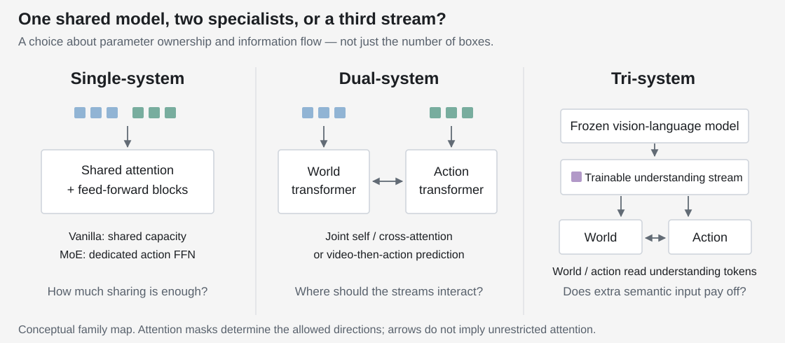
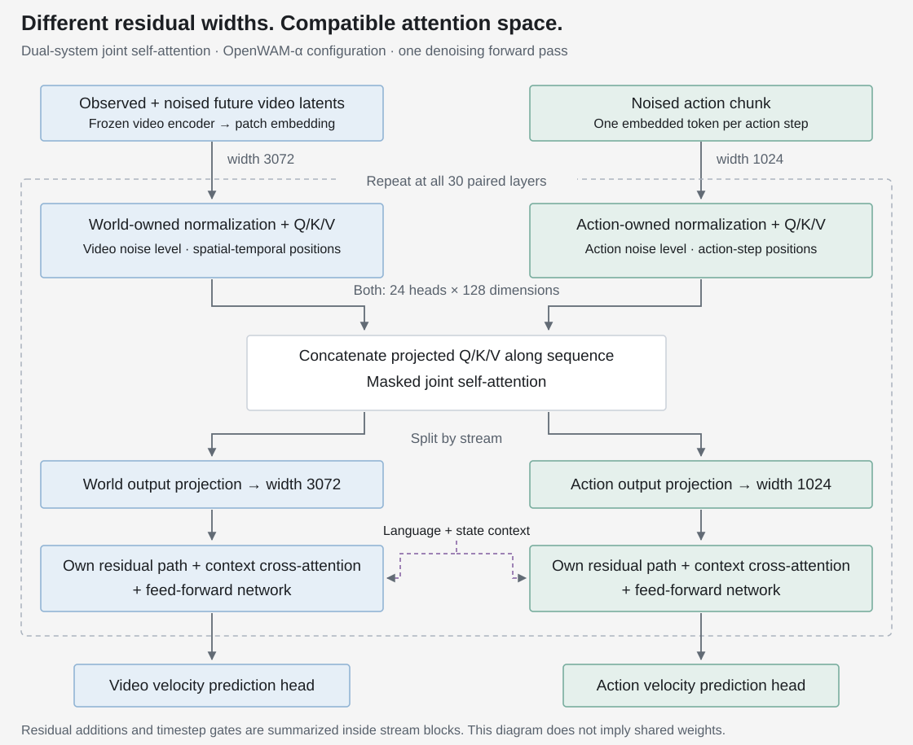

01 / The design problem
Good video prediction is not yet a control interface.
A world–action model predicts future visual states and an action chunk from the current observation, instruction and robot state. The useful question is not only whether it can generate a plausible future, but how the action predictor uses the representations learned through that task.
Sharing everything is economical in design, but video and action tokens need not benefit from the same parameters. Separating everything gives actions their own capacity, but risks losing the world model’s useful features. Adding a vision-language model supplies another source of information, yet also introduces another stream to train and deploy.
Capacity
Do action tokens share the video transformer, or have a dedicated action transformer?
Communication
Do the streams interact inside attention, through a conditioning bridge, or in two stages?
Visibility
Can actions read predicted world features? Can those features also read actions?
These are related decisions, not synonyms. In particular, separate parameters do not imply isolated attention, and a one-way forward path does not imply a frozen world model.
02 / Three architecture families
Make sharing a choice, not an accident of the codebase.

Single-system sends video and action tokens through a shared transformer. The vanilla variant shares the dense blocks; the MoE variant hard-routes action tokens to a dedicated feed-forward expert while retaining shared attention. Here “MoE” does not mean a learned router chooses an arbitrary expert for every token.
Dual-system gives actions a dedicated ActionDiT—a diffusion transformer for action chunks. Joint self-attention mixes projected video and action tokens within a layer. Cross-attention instead lets action queries read video features. The inverse-dynamics variant generates a video trajectory first, then predicts actions from it.
Tri-system adds a trainable understanding stream fed by a frozen vision-language model. World and action streams can read its tokens; the understanding tokens attend only within their own stream. This is not unrestricted three-way feedback.
Implementation design: one execution contract, different compositions
Each backbone exposes input preparation, a per-layer step and final prediction. For joint attention, the layer step is split into pre_attn_at_layer and post_attn_at_layer. The first emits queries, keys and values; the second consumes the attention result.
The composition driver schedules the streams and substitutes the attention operation. It owns no learned parameters: weights remain in the backbones. This keeps a change in communication from requiring a separate trainer or policy-server implementation.
That modularity makes comparisons practical; it does not automatically make different architectures parameter- or compute-matched.
03 / What the comparison says
Dedicated action capacity helps here. A third stream adds less.
The architecture study evaluates RoboTwin2.0-Full, trained with 2,500 clean-scene and 25,000 randomized-scene demonstrations. Both clean and randomized evaluations are therefore part of the in-domain protocol, not a test of training only on clean scenes and generalizing to unseen randomization.
| Family | Variant | Clean | Randomized | Average |
|---|---|---|---|---|
| Single | Vanilla | 85.20 | 85.80 | 85.50 |
| Single | MoE | 86.22 | 83.04 | 84.63 |
| Dual | Joint self-attention | 92.34 | 92.38 | 92.36 |
| Dual | Joint cross-attention | 87.86 | 88.64 | 88.25 |
| Dual | Detached cross-attention | 92.06 | 91.64 | 91.85 |
| Dual | IDM | 87.76 | 88.14 | 87.95 |
| Tri | Joint self-attention | 92.84 | 92.36 | 92.60 |
The useful comparison is not simply “more parameters wins.”
Dual joint self-attention exceeds single vanilla by 6.86 percentage points in this comparison. But routing actions to their own feed-forward expert alone does not improve the average. The result favors the tested dual design; it does not isolate parameter count from the other architectural changes.
Forward information and backward gradients are different design choices.
Detaching video features in the cross-attention bridge improves the average from 88.25% to 91.85%, a 3.60-point difference. The action model still reads video features; its loss simply stops updating the video model through that bridge. Video learning can continue through the video objective. Gradient interference is a plausible explanation to investigate, not a mechanism established by this table alone.
The highest number is not automatically the best default.
The tri-system result is 92.60%, versus 92.36% for dual joint self-attention: a 0.24-point gap without reported seed uncertainty in this table. The study adopts the dual design to balance complexity and performance, and to investigate world–action interaction without the extra VLM features. This is a scoped choice, not evidence that VLM understanding is unnecessary for all robotics tasks.
04 / Inside the attention bridge
Share an attention space, not all transformer weights.
In the final OpenWAM-α configuration, video tokens have residual width 3072 and action tokens width 1024. Those tensors cannot simply be concatenated along their sequence axis. Each stream first uses its own projections to produce a compatible attention layout: 24 heads × 128 dimensions.

Queries, keys and values—Q, K and V—are the projected tensors used to compute attention. Concatenating each of them along sequence creates one attention operation over both token groups. Its output is split again; each stream projects back to its own width and continues through its own residual and feed-forward paths.
The distinction that matters: “joint self-attention” describes the combined token sequence. It does not mean shared Q/K/V weights, identical hidden widths, or the absence of other cross-attention layers.
PyTorch · the joint-attention operation
def joint_attention(video_qkv, action_qkv, allow, num_heads):
"""Inputs: three [B, sequence, heads * head_dim] tensors per stream."""
n_video = video_qkv[0].shape[1]
n_action = action_qkv[0].shape[1]
# Projections and positional encoding have ALREADY been applied.
# Concatenate on sequence, not on feature width.
q, k, v = [
torch.cat([world, action], dim=1)
for world, action in zip(video_qkv, action_qkv)
]
batch, length, width = q.shape
head_dim = width // num_heads
def heads(x):
return x.reshape(batch, length, num_heads, head_dim).transpose(1, 2)
mixed = F.scaled_dot_product_attention(
heads(q), heads(k), heads(v),
attn_mask=allow, # Boolean True means this key is visible.
dropout_p=0.0,
)
mixed = mixed.transpose(1, 2).reshape(batch, length, width)
world_out, action_out = mixed.split([n_video, n_action], dim=1)
# Each stream next applies its OWN output projection and block suffix.
return world_out.contiguous(), action_out.contiguous()Reduced from the inspected execution contract, not a complete model. The caller supplies stream-specific normalization, timestep modulation, Q/K/V projections and positional encoding; output projection, residual updates, context attention and feed-forward layers follow this function. Download the two-function example.
The final model starts its world transformer from pretrained Wan2.2-TI2V-5B weights and adds a dedicated 1B-parameter ActionDiT. During embodied training, both transformers are updated. The video encoder and text encoder remain frozen. Reusing a video prior is not the same as freezing the world model.
05 / What can each token see?
Protect the present. Let actions read the predicted world.
“Joint attention” still leaves a question unanswered: which keys are visible to each query? The clean observed-frame tokens must not read noised future tokens or noised actions. Otherwise the representation of the current observation would itself become contaminated by the variables being denoised.
The final mutual mask is easy to state at the token-group level. Rows below are queries; columns are the keys they may read. Each cell expands into a full block of token-to-token permissions.
| Query ↓ / Key → | Observed video | Future video | Actions |
|---|---|---|---|
| Observed video | Read | Blocked | Blocked |
| Future video | Read | Read | Read |
| Actions | Read | Read | Read |
PyTorch · the mutual mask, without ambiguous arrow notation
def mutual_mask(n_observed, n_future, n_action, device=None):
"""Rows are queries; columns are keys. Order: observed, future, action."""
n_video = n_observed + n_future
total = n_video + n_action
allow = torch.zeros((total, total), dtype=torch.bool, device=device)
# Clean observation tokens read only the clean observation.
allow[:n_observed, :n_observed] = True
# Noisy future-video and action tokens read all three groups.
allow[n_observed:, :] = True
return allowThis example omits padding and extra streams. It uses PyTorch scaled-dot-product attention’s boolean convention: True permits attention. The 3 × 3 table is a group-level view, not the actual token-length mask.
The separate masking study asks whether the action and predicted-video streams need access to one another. All four masks retain access from actions to the current observation; the comparison changes access to future-video features. That access matters much more here than the reverse direction:
| Mask label in manuscript | Clean | Randomized | Average |
|---|---|---|---|
| Isolated | 88.08 | 86.74 | 87.41 |
| Video sees action | 87.92 | 87.34 | 87.63 |
| Action sees video | 92.98 | 91.80 | 92.39 |
| Mutual | 92.50 | 91.80 | 92.15 |
Allowing actions to additionally read future-video features raises the average from 87.41% to 92.39% in this study. These are intermediate features of the jointly denoised video stream, not a finished video plan that must be decoded first. Adding the reverse path does not improve this particular comparison. The choice between one-way and mutual visibility is revisited after pretraining; the final OpenWAM-α uses mutual attention. The pretraining evidence belongs in its own article.
A naming subtlety: “isolated” still retains current visual conditioning
Figure 8 of the manuscript and the inspected mask implementation agree: action queries can read clean observed-frame tokens in all four modes. “Isolated” blocks action–future-video interaction, not access to the present observation.
Read the manuscript’s shorthand “no cross-stream communication” in that narrower sense. The difference being tested is whether actions can use the future-video stream’s evolving representations, rather than whether the policy has any visual input at all.
06 / The resulting design
The interface is the architectural decision.
The useful outcome is not a catalogue of single-, dual- and tri-system models. It is a concrete design: a pretrained world transformer and a dedicated action transformer; compatible attention projections but separate residual paths; action access to world features; and a protected clean-observation prefix.
My main takeaway is to separate capacity, forward visibility and gradient coupling before interpreting an architecture result. A larger action expert, an extra VLM and a different mask change different things. Treating them as one “fusion strategy” makes both experiments and failure analysis harder to explain.
What this evidence supports: dual-system joint attention is a well-motivated default for the studied setting. It does not establish that a world model is explicitly planning, that tri-system semantics have no value, or that these benchmark numbers transfer unchanged to real robots.
The next architectural question is therefore task-dependent: which failures actually require additional semantic understanding, and which can be addressed within the existing world–action interface? That is a more useful reason to add a stream than architectural complexity by itself.
Sources / Evidence boundary
What this note is based on
- OpenWAM: An Open, Modular Exploration Towards Systematic World–Action Model Pretraining, manuscript, September 2026. Architecture definitions: §3.1. Protocol and comparisons: §4 and §4.2, Tables 1–2. Final model: §5.1.1 and Figure 12.
- OpenWAM implementation, revision
308175a(June 23, 2026): dual-system joint-attention driver, cross-attention bridge and mask construction. Used to explain mechanics, not asserted to be the precise revision that produced the manuscript results.
These are team-reported measurements, not new reproductions conducted for this page. The architecture comparison is not established here as parameter- or compute-matched, and the reported tables provide no seed uncertainty. Upstream video pretraining and embodied pretraining are distinct; a study without embodied pretraining need not initialize its video backbone randomly.